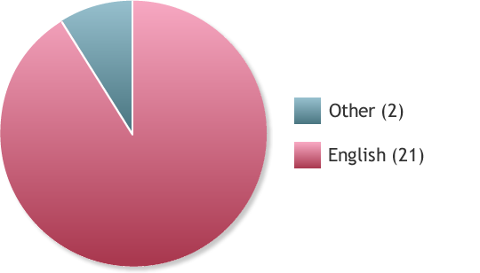

Workshop Invite | Pre-survey | Questions | Post-survey | Post-survey Exercises | Post-survey Comments | Reflections | Follow-up-comments
1. Your gender (circle one):
Response options:
- Male
- Female
2. Your age (circle one):
Response options:
- Under 20 *
- 20 to 39
- 40 to 60
- Over 60
* Response not chosen by any participant
3. Your primary language (circle one):
Response options:
- English
- Tagalog *
- Japanese *
- Other (list) ______
* Response not chosen by any participant
Data for Other (2):
Listed were Vietnamese and Spanish
4. What type of computer do you use (circle one)?
Response options:
- PC
- Mac
- Equal use of both
- Other (briefly describe) *
* Response not chosen by any participant
5. Rank your computer experience level (circle one):
Response options:
- Beginner
- Intermediate
- Advanced
- Expert *
* Response not chosen by any participant
Data issue:
One participant circled both Intermediate and Advanced. Data excluded from pie chart (left)
6. How many hands-on software training workshops have you previously attended (circle one)?
Response options:
- 0
- 1-3
- More than 3
7. Have you attended a workshop in this computer lab (circle one)?
Response options:
- Yes
- No
8. Do you currently own or have access to Photoshop (circle one)?
Response options:
- Yes
- No
- If yes, which version? (list) ______
Data issue:
Of the 22 'Yes' respondents asked to supply their version of Photoshop, only 10 did so
Version listed: Latest (1), CS3 (2), CS4 (3), CS5 (2), CS5.1 (1), CS5/CS3 (1)
9. The amount of time you've spent using Photoshop (circle one):
Response options:
- None
- < 10 hours
- > 10 hours
10. Rank your Photoshop experience level (circle one):
Response options:
- Beginner
- Intermediate
- Advanced *
- Expert *
* Response not chosen by any participant
11. Your primary reason to learn Photoshop (circle one)?
Response options:
- Personal
- Work
- School *
- Other (briefly describe) *
* Response not chosen by any participant
Data issue:
Two participants circled both Personal and Work. Data excluded from pie chart (left)
12. Which statement best describes your motivation to learn Photoshop (circle one)?
Response options:
- I have an urgent need to learn
- I have an no urgent need, just a keen interest
- Other (briefly describe)
Data for Other (2):
1. I ultimately need to learn more things that Photoshop CS5 can do but it's not urgent yet. I should use it more often but for now, only when I need to do certain things.
2. I have a semi-urgent need to learn Photoshop for work.